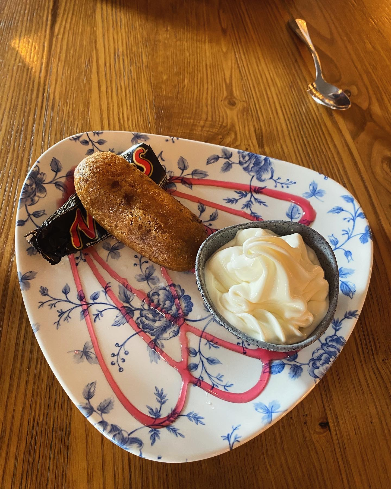
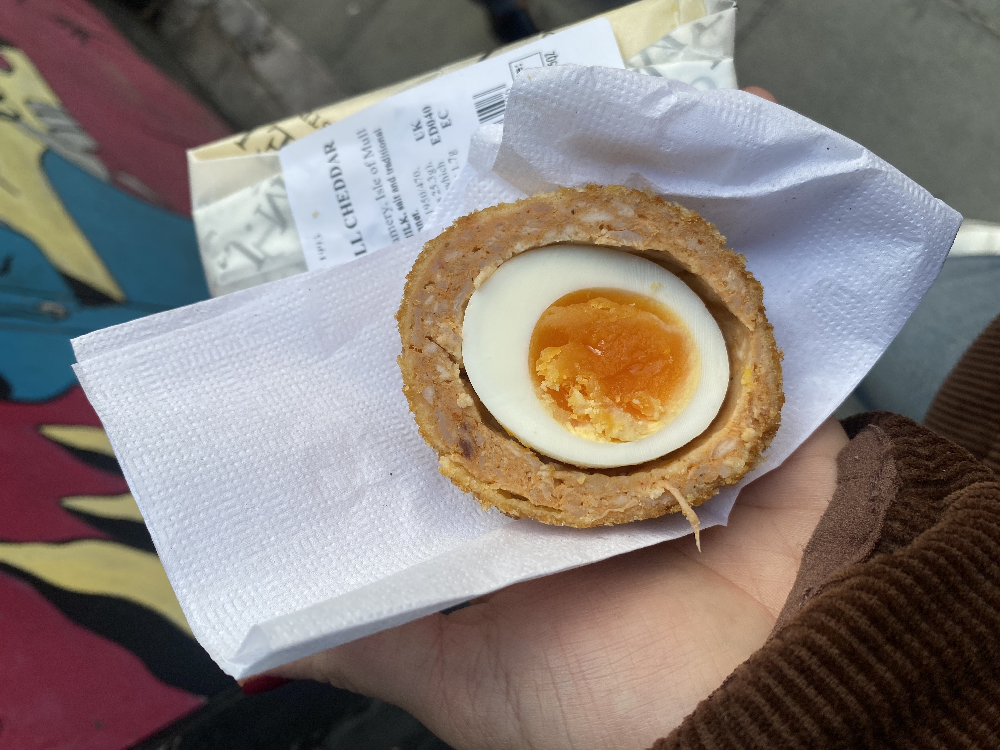

SCOTLAND
Bertie’s Proper Fish & Chips
I stumbled upon this place while walking around near my hotel, just exploring. Fried Mars bars had been on my bucket list ever since I was a kid, my dad used to talk about them, and I was always fascinated.
I overheard a group of guys say this was the place to get one, Bertie’s Proper Fish and Chips, so I walked in without hesitation and ordered one. One bite in, I genuinely felt like I had been missing out on something life-changing. Like… how did I go this long without this?
Naturally, I ordered another one. It was perfect. The warm, gooey chocolate paired with house-made vanilla ice cream and a drizzle of raspberry syrup was ridiculously indulgent, in the best way possible.

I.J. Mellis Cheesemonger
One of my favorite meals growing up was my mom’s Scotch eggs, so trying one in Scotland felt like a must. On my second day in Scotland, I wandered into a cheese shop and ended up tasting about 10 different cheeses. Then they mentioned they were known for their Scotch eggs, and obviously, I was a goner.
It was everything I hoped for. The pork sausage was perfectly seasoned, the egg was warm with that ideal jammy center, and all the flavors came together in the most comforting, satisfying way.
